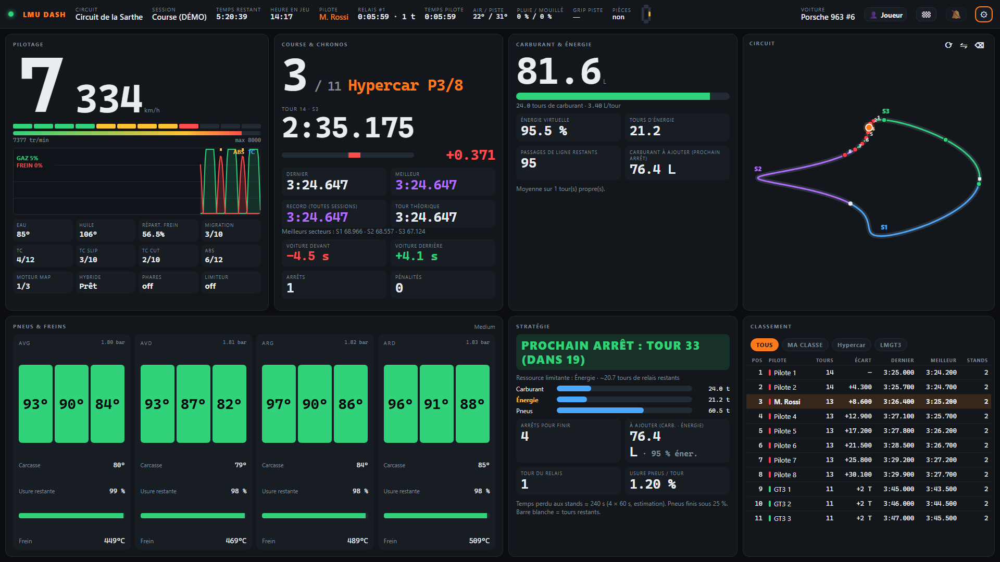

LMU Dash lit la télémétrie officielle de Le Mans Ultimate et affiche, en direct dans ton navigateur, la stratégie carburant et énergie, les relais d'endurance, les drapeaux et la carte du circuit.

Aucun prérequis : un seul fichier, à lancer sur le PC du jeu.
Settings → Gameplay → Enable Plugins, puis relance le jeu.localhost:8765. Glisse la page sur ton 2ᵉ écran, F11.Tout ce qu'il faut pour une course d'endurance, sans quitter la piste des yeux plus d'une seconde.
Ressource limitante (carburant, énergie virtuelle, pneus), prochain arrêt, arrêts pour finir, quantités à ajouter, économie suggérée.
Mesuré automatiquement à chaque arrêt ; les tours sous Safety Car ou FCY sont exclus des moyennes.
Relais, temps cumulé par pilote avec limites, historique des tours, export CSV.
FCY, Safety car, jaune dans ton secteur ou le suivant, voiture arrêtée devant toi avec sa distance.
Tracé appris tout seul, toutes les voitures, secteurs colorés, zones jaunes qui clignotent.
Bandeau, halo et bips : carburant, pneus, surchauffe, BOX, dégâts, pluie — chacune réglable.
Meilleur tour et meilleurs secteurs par circuit et voiture, toutes sessions, tour théorique.
Affiche le dashboard sur une tablette ou un 2ᵉ PC du réseau local.
Cartes publiées par la communauté, téléchargées automatiquement au lancement : plus de tour de repérage.
Tu as roulé sur un circuit qui manque ? Partage sa carte en deux minutes, sans rien installer.
⚙ → « Exporter la carte actuelle », puis dépose le fichier sur GitHub. Un aperçu du tracé est généré automatiquement. Mode d'emploi.
Passe par les Discussions.
Ouvre une issue avec ta version et ce qui s'est passé.